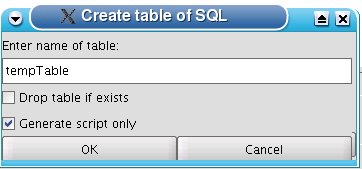

SQL Scripts 1.3 - Johan Compagner and Gerd Wagner
This plugin provides a wide range of scripting functions:
You may create DDL scripts for tables out of the Object tree or from the Graph plugin. The scripts contain all constraints and indexes.
You may create Insert scripts out of the Object tree for all of a table's data.
You may create an insert script from an SQL Select statement. To do so in the SQL editor hit the ctrl + t shortcut to open the tools popup. Then choose the sql2ins function from the popup.
You may export the result of an SQL Select statement directly into a file. To do so in the SQL editor hit the ctrl + t shortcut to open the tools pop-up. Then choose the sql2file function from the pop-up. Alternative, you can do this via the menu entry Session => Scripts => Store result of SQL in file
You may store the result of an from an SQL Select statement in a temporary table. To do so in the SQL editor hit the ctrl + t shortcut to open the tools popup. Then choose the sql2table function from the popup.

You may export the result of the currently selected SQL Select statement directly into a file. To do so, select a SQL Select statement in the SQL editor and hit the ctrl + t shortcut to open the tools pop-up. Then choose the sql2file function from the pop-up. Alternative, you can do this via the menu entry Session => Scripts => Store result of SQL in file